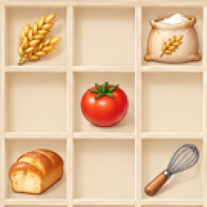
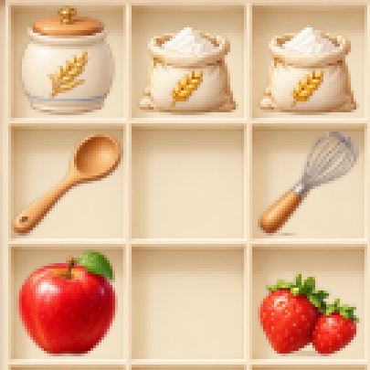
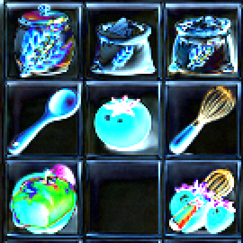

左上棋盘局部 · 原像素放大3倍
原图稿
实际截图
RGB绝对差 × 4
棋盘采用一张连续柜格底图，7列9行，实际点击格44×44，横纵间隔均为0。木质分隔条仍有厚度。参考图棋盘外框约311×391，当前为308×396，以保持63个正方格；与原图不是逐像素复刻。
仍有差异：保留了原小白狗与红M帽；物品、订单文字和摆放按游戏内容生成；柜体木纹、暖色深浅及底部物件轮廓与原稿不同。高级生产器在44像素下仍有较多细节，部分相邻等级需要结合等级信息辨认。